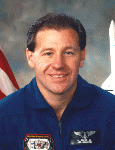

Lyndon B. Johnson Space Center
Houston, Texas 77058
|
National Aeronautics and Space Administration Lyndon B. Johnson Space Center Houston, Texas 77058 |
 |
Biographical Data |
||
Albert Sacco, Jr. (Ph.D.)
Payload Specialist
PERSONAL DATA: Born on May 3, 1949, in Boston, Massachusetts. Married the former Teran Lee Gardner, of Massachusetts, in November 1971. They have four children. He enjoys jogging, reading, walking, and is an avid scuba diver and a certified scuba instructor. His mother, Sarah Kathleen, and his father, Albert, Sr., reside in Belmont, Massachusetts. Her mother, Marian, and father, Carl, reside in Gilford, New Hampshire.
EDUCATION: Graduated from Belmont Senior High School in 1968; received a bachelor of science degree in Chemical Engineering with honors from Northeastern University, Boston, Massachusetts, in 1973; was awarded a doctorate in Chemical Engineering from the Massachusetts Institute of Technology, Cambridge, Massachusetts, in 1977.
ORGANIZATIONS: Dr. Sacco is a member of the American Institute of Chemical Engineers (Treasurer-Western Section, 1979-1982); past president of the New England Catalysis Society (1983-1985), and the New England representative to the North American Catalysis Society (1985-1989); an Advisory Board member of the American Carbon Society; a member of the American Institute of Aeronautics and Astronautics (AIAA), and serves on the AIAA Technical Committee on Space Processing (1990-1995); and a member of the Association of Space Explorers-USA.
PUBLICATIONS: Dr. Sacco has over 70 publications (including book chapters) in the areas of carbon filament initiation and growth, catalyst deactivation, and zeolite synthesis.
SPECIAL HONORS: One of the four U.S. experts invited to put on a joint U.S./European NATO Advanced Study Institute "Carbon Fibers and Filaments" (1989); was honored in 1984 by the Worcester Engineering Society, receiving the Admiral Earl Award for meritorious contributions in applied sciences, specifically in the fields of catalysis and adsorbent deactivation; received a National Science Foundation Young Faculty Initiation Grant (1978); and won the Northeast AIChE student paper contest in 1973.
EXPERIENCE: Since 1977, Professor Sacco has been on the faculty at Worcester Polytechnic Institute in the Department of Chemical Engineering. He has split his time between research and teaching. He was appointed Department Head in July 1989. He has consulted for numerous companies in the fields of catalysis, solid/gas contacting, and equipment design for space applications. Also he, with his father (Al) and brother (Bernard), ran a family restaurant business in Boston for over 20 years.
SPACE FLIGHT EXPERIENCE: Dr. Sacco flew as a payload specialist on STS-73, which launched on October 20, 1995, and landed at the Kennedy Space Center on November 5, 1995. The 16 day mission aboard Columbia focused on materials science, biotechnology, combustion science, and fluid physics contained within the pressurized Spacelab module.
CURRENT ASSIGNMENT: Dr. Sacco is presently a Professor and Head of the Chemical Engineering Department at Worcester Polytechnic Institute. He is also the Principal Investigator on the Zeolite Crystal Growth experiments, which flew on STS-73.
DECEMBER 1995